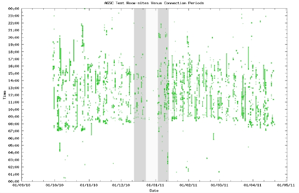

Case Study 2: Testing, testing, testing
One of the most important roles of a support centre is testing.
The official AGSC Test Room is used almost solely for very short mostly self- test sessions, which
is what it is designed for. The reason for this is that it broadcasts continual music and has a fixed
delay causing any sound you send to be played back a few seconds later. This is a ‘popular’
service and as expected over a recent seven month period there have been 2,776 visits, averaging
only 1 minute and 4 seconds and these meetings are scattered throughout the day fairly evenly.

There is also a weekly open session which anyone can attend that occurs at 10am-11am every
Tuesday, in the Marble Beer House Virtual Venue. We can also explore this virtual venue visually
and for the same seven month period there have been 597 visits, averaging 28 minute 55 seconds.
The 10am slot is clearly visible in the graphs, but it is also used regularly throughout other parts of
the day, mainly during the working hours of 9-5.
A key component was to analyse the data when cross correlation with QA data.
Quality
Assurance process is a step-by-step activity any video conferencing node can undertake to
confirm all components of a room and the installed software/hardware are working well.
We have been looking in the activity data for evidence that the QA has a noticeable effect. Directly
this has been difficult to establish, but there are stats for comments and complaints on one of the
lecture series. Over the 2011/2011 lecture series there were 32 modules consisting of 433 lectures
delivered. Half way through a full QA test was carried out on all the participating nodes. Prior to
this there were 48 instances of poor audio, that were then resolved. In the future it could be
possible to monitor audio quality levels within the statistics.
A longer term aim would be to automatically detect when QA tests should occur. This could be
due to;
- Noticeable intermittent connections within the activity data - this has not been not seen in sample available, or
- Extended period of lack of use; as opposed to a regular check.